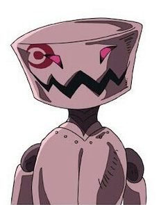
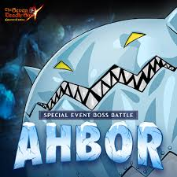

"It's time for Galan Game!"
Please keep in mind there will be many spoilers, so I recommend you watch Seven Deadly Sins on Netflix before you tread any further.
Galan (also known as Galand due to the anime) is one of the Demon Kings elite troup, known as the Ten Commandments. He is one of the oldest members of this elite group, being around 991 years old. Galan possesses the commandment on Truth, which is decently powerful with it's ability to turn anyone who lies into stone. As a demon he is able to regenerate almost any wound and is able to use the darkness within his body to make wings, granting him access to any height. Speaking of height, he's 13'5 feet tall and is around 730 pounds. His weight makes sense once you realize his skin is a crimson colour (or emerald green in the manga).
This is one of the most interesting parts because Nakaba Suzuki only gives us very small hints. Such as him apparently having a sibling because he has a confirmed nephew named Pump. He also knows the missing 10th original commandment, who he saw turn into an Indura. He's also 991 years old so you have to ask the question "What has he been doing his whole life?"
It also allows the fans to have a little fun about his past, which is always welcomed for fan fiction writers!
| Darkness | As mentioned before, all demons have the ability to use this ability in many ways. Wings, protection, anything you can think of. |
|---|---|
| Enhanced Regeneration | All demons can regenerate wounds but Galan's commandment is hinted at being able to enhance this ability. |
| Commandment of Truth | The commandment the Demon King bestowed upon Galan has the ability to turn any liar to stone, including himself. |
| Critical Over | As someone who doesn't use magic, Galan has a very simple form in order to increase his strength. In this form he is able to level mountains with a shockwave of an attack. |
| Chaotic Judgement | Using his halberd he releashes a bombardment of attacks all around him. Swinging his weapon around at incredible speeds, the land around him completed destroyed in its aftermath. |
| Wretched Scatter Strike | With his stength, Galan launches himself into the air and reels his halberd back before repeadetly thrusting it at the ground below. The aftermath, much like Chaotic Judgement, results in the earth destroyed. |
| Critical Strike | A single strike attack that requires absolute precision, cutting through anything his weapon makes contact with. |
| Pump, found in the season 2 opening and in "Prisoners of the Sky". |  |
|---|---|
| Aboru, or Ahbor, was introduced during the winter time as a special boss in Grand Cross. |  |
If you wish to fight please email me at gotosubcon@hotmail.com.